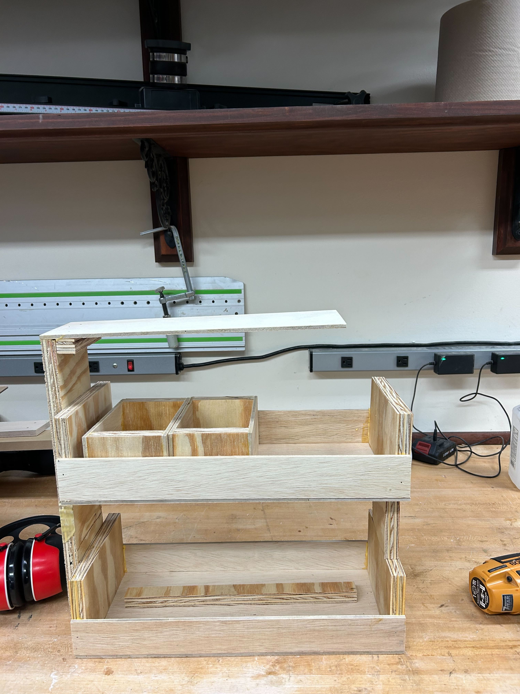

MECN 5055 Advanced Product Design
As we refine our microgreens growing system, we focus on critical areas that impact user experience and system efficiency. These guiding questions will direct our prototyping efforts to ensure our solution meets the needs and preferences of our target users.
How can we design the prototype to optimize for limited counter space while ensuring it remains functional and accessible for users?
In what ways can we improve the ergonomics of interacting with the device, particularly in harvesting microgreens and performing maintenance tasks like cleaning?
What are the most effective and user-friendly designs for the lighting and watering systems that we can prototype to ensure optimal growth of microgreens?
Through prototyping, how can we assess the aesthetic appeal of the device and its impact on a user's likelihood to incorporate it into their daily routine?
We have created a prototype from wood to address questions around form factor and counter space. This prototype includes individual growing containers to test user interaction with removing the containers. Our goal was to evaluate the prototype's fit in a typical kitchen environment and its usability in terms of interacting with the growing containers.
Key takeaways from this phase include concerns that the prototype may be too large for typical counter spaces, and the individual containers may also be too big, making them challenging to remove. We are considering adding handles to the containers to facilitate easier removal.
Our prototyping efforts are focused on building and testing at least four different concepts or refinements around our chosen concept. Each prototype is constructed with specific goals in mind, tested with our target market, and evaluated for insights that can guide our design process.
We will begin testing our prototypes in the coming weeks with our target users and report back with collected data here.
The primary takeaways from our prototyping efforts highlight the importance of counter space efficiency, optimal grow conditions, energy-efficient lighting, and user-friendly harvesting methods. Going forward, we will explore reducing the overall size of the prototype, experimenting with grow substrates and lighting conditions, and adding features to the containers to enhance usability. These changes aim to address the feedback received and make our product more appealing and practical for our target users.